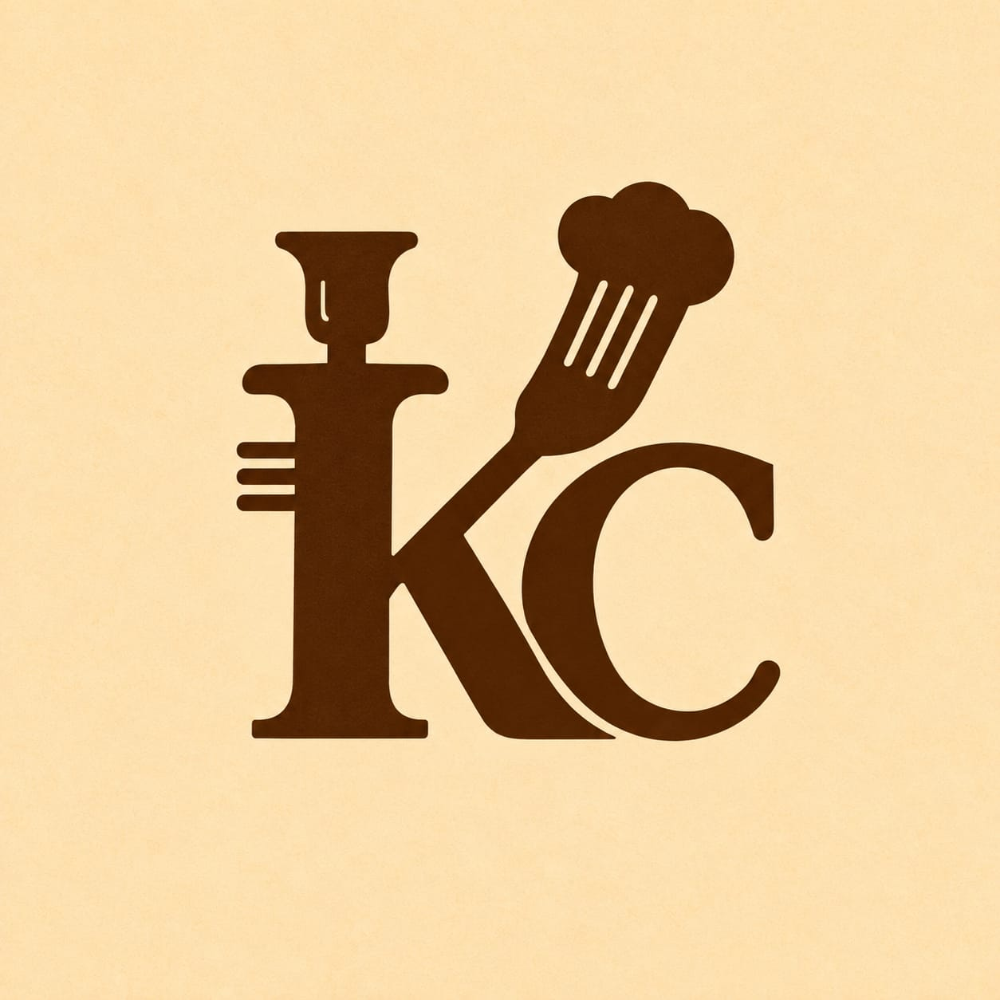
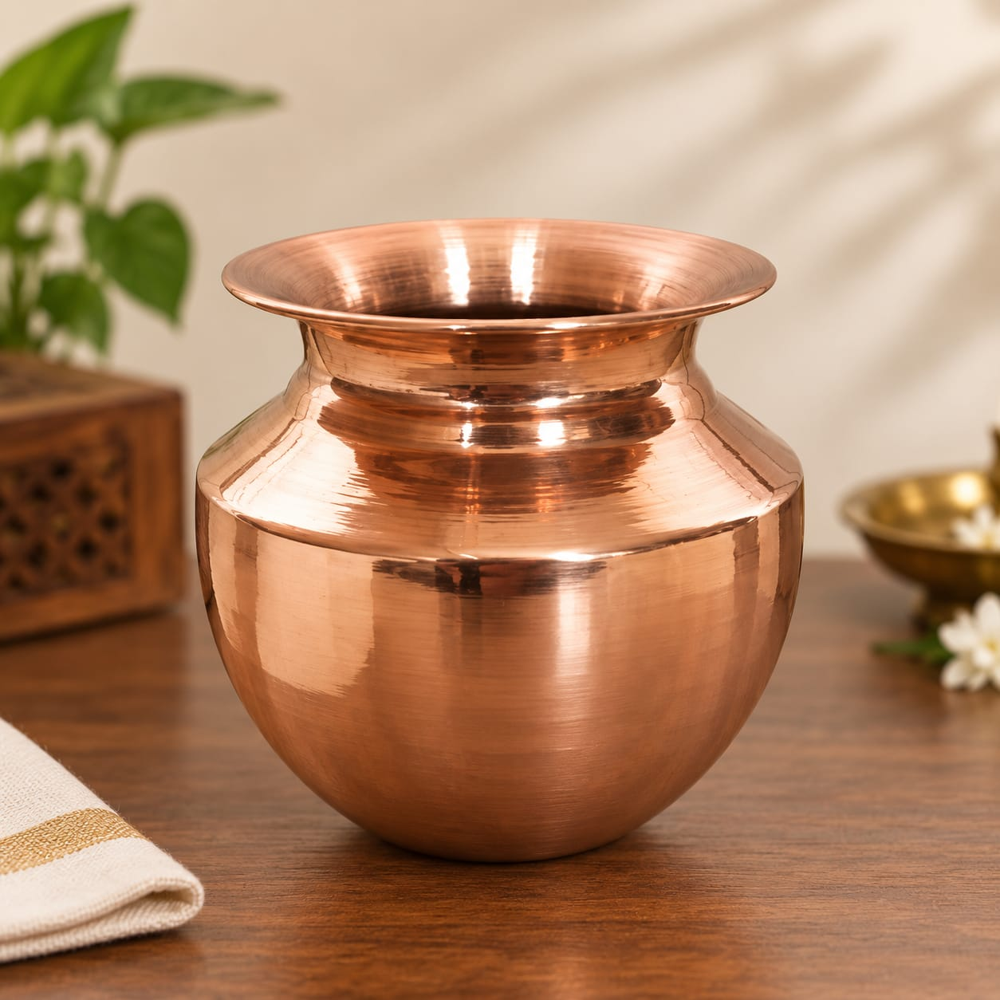
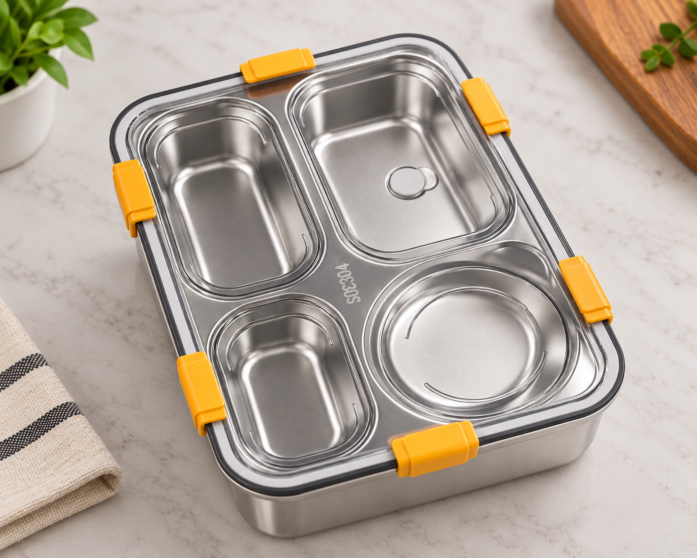
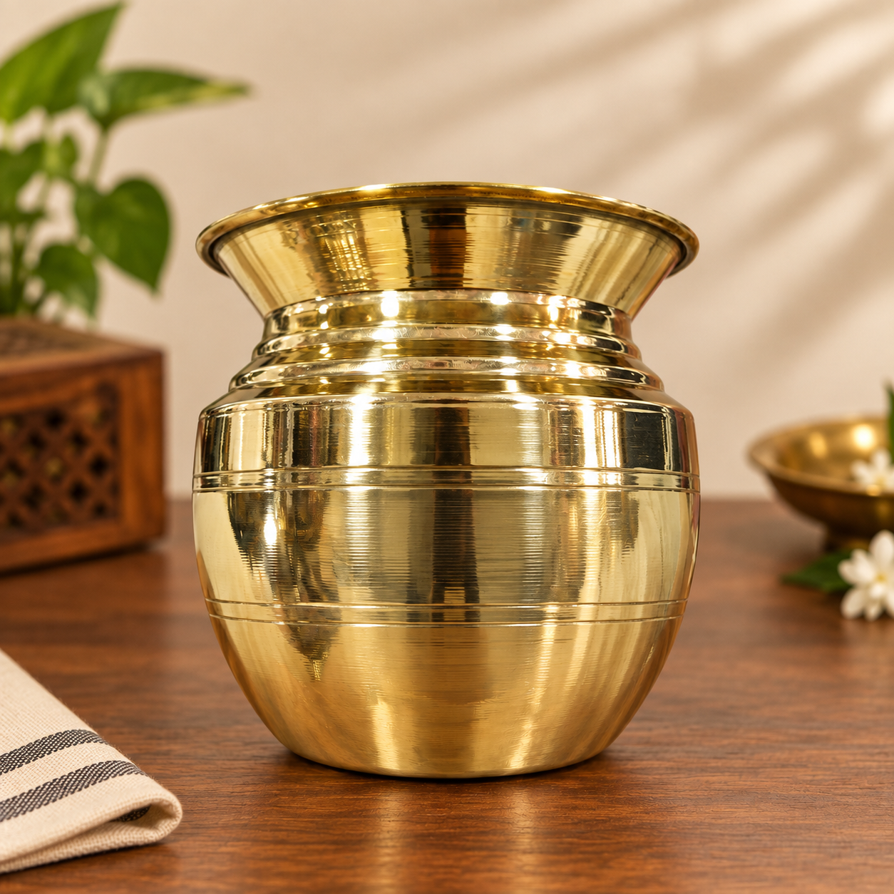
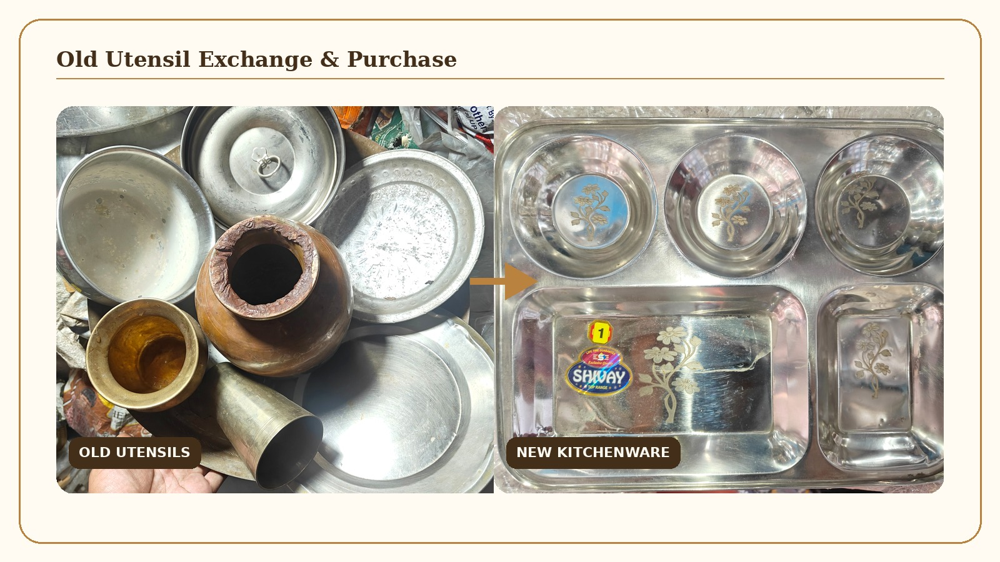
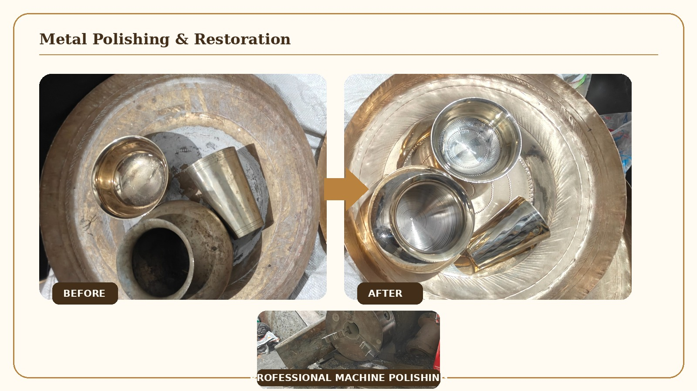

Copper Utensils
Traditional Copper Lota
A beautifully crafted copper lota with a traditional design, suitable for पूजा, धार्मिक use, gifting and traditional home use.
Enquire on WhatsApp
KeshChand KitchenwareKESHCHAND KITCHENWARE
Discover quality kitchenware, traditional utensils and thoughtfully selected products for everyday cooking and living.

Everyday stainless steel kitchenware.
Cookware for everyday cooking.
Traditional brass and copper products.
Useful products for your kitchen.
Spoons, knives and other cutlery.
Unique traditional and vintage pieces.
Explore some of our selected kitchenware products.
Copper Utensils
A beautifully crafted copper lota with a traditional design, suitable for पूजा, धार्मिक use, gifting and traditional home use.
Enquire on WhatsApp
Stainless Steel
A stainless steel lunch box with four separate compartments and secure side clips, designed for organized meal packing and everyday use.
Enquire on WhatsApp
Brass Utensils
A beautifully finished brass lota featuring a classic traditional design, suitable for पूजा, धार्मिक use, gifting and traditional home use.
Enquire on WhatsAppKeshChand Kitchenware is a kitchenware and utensils shop in Prayagraj offering a range of products for everyday cooking, dining and traditional household use.
Our collection includes stainless steel kitchenware, cookware, brass utensils, copper utensils, kitchen accessories and traditional products. We offer practical kitchen essentials as well as selected traditional and premium pieces.
We also provide old utensil exchange and purchase services in Prayagraj. Customers can exchange old metal utensils while purchasing new kitchenware, or sell their old utensils directly to us. We also provide professional polishing services for brass, copper, phool and gilat utensils, as well as metal statues.
Located in Thatheri Bazar, Chowk, Prayagraj, KeshChand Kitchenware serves customers looking for reliable kitchenware and traditional utensils for their homes, gifting and everyday needs.
OUR SERVICES
More value for your old utensils and professional care for your metal items.

SERVICE 01
Bring your old metal utensils to KeshChand Kitchenware and exchange them while purchasing new kitchenware, or sell them directly to us.
We accept a wide range of metal utensils including stainless steel, aluminium, brass, copper, phool, gilat and other metals.

SERVICE 02
Give your old metal items a refreshed appearance with our professional polishing service.
We polish brass, copper, phool and gilat utensils, including items purchased from outside our shop. We also polish and refresh the appearance of metal statues of different types.
GOOGLE REVIEWS
Had a great experience?
We'd love to hear from you. Share your experience with us on Google.
⭐ Give Us a ReviewKESHCHAND HERITAGE
Discover unique brass, copper and traditional pieces selected for their character, craftsmanship and timeless appeal.
परंपरा की खूबसूरती, आज के घरों के लिए
Explore Heritage CollectionKeshChand Kitchenware is a kitchenware business based in Prayagraj, offering a range of kitchen and household products.
From everyday kitchen essentials to traditional brass and copper pieces, our goal is to provide products suitable for different needs and occasions.
47/52, Thatheri Bazar, Chowk, Prayagraj
📍 Get DirectionsWhatsApp: WhatsApp Us
Phone: 8687304192